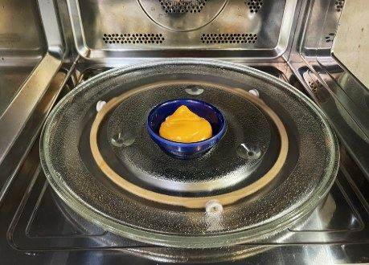
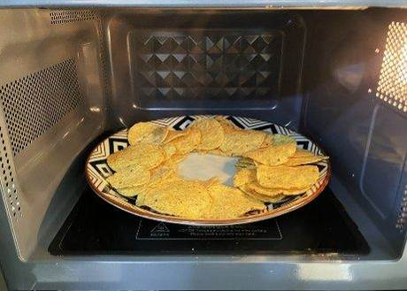
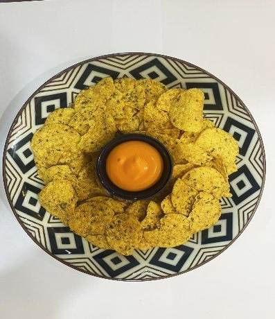

| 메뉴명 | 오리지널 나쵸 |
|---|---|
| 판매가격 | 5,500원 |
| 원재료 | 나쵸, 치즈소스, 파슬리 |
| 사용 부자재 | 돈까스접시, 젓가락 |
| 메뉴특징 | 체다치즈의 진하고 풍성한 치즈맛과 나쵸의 담백함이 조화롭게 어우러진 오리지널나쵸 |
조리방법

1
소스볼에 나쵸치즈소스 40g 을 담아 [그릴모드]로 2분간 돌려준다.
소스볼에 나쵸치즈소스 40g 을 담아 [그릴모드]로 2분간 돌려준다.

2
접시에 나쵸 100g을 가운데 소스볼 들어갈 자리를 빼고 가장자리에 둘러 담아, 렌지에서 1분간 돌린다.
접시에 나쵸 100g을 가운데 소스볼 들어갈 자리를 빼고 가장자리에 둘러 담아, 렌지에서 1분간 돌린다.

3
가운데에 데운 나쵸소스를 올리고, 나쵸에 파슬리를 뿌려 완성한다.
(젓가락, 물티슈 제공)
가운데에 데운 나쵸소스를 올리고, 나쵸에 파슬리를 뿌려 완성한다.
(젓가락, 물티슈 제공)
※부서진 나쵸는 최대한 아랫쪽에 깔아주기!!